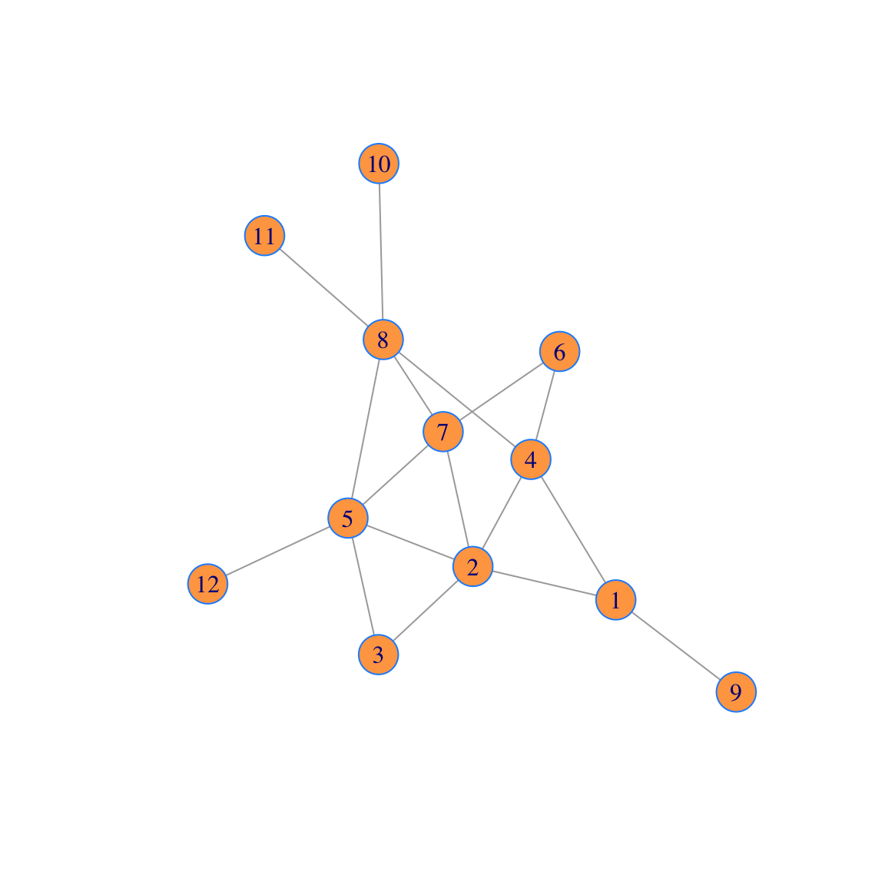
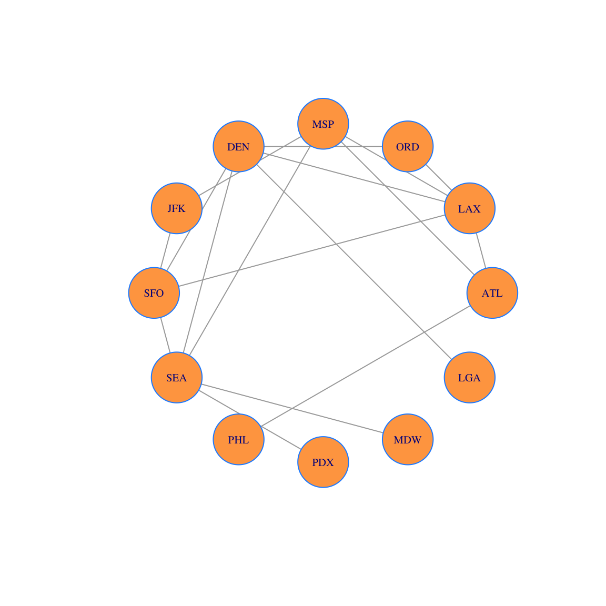
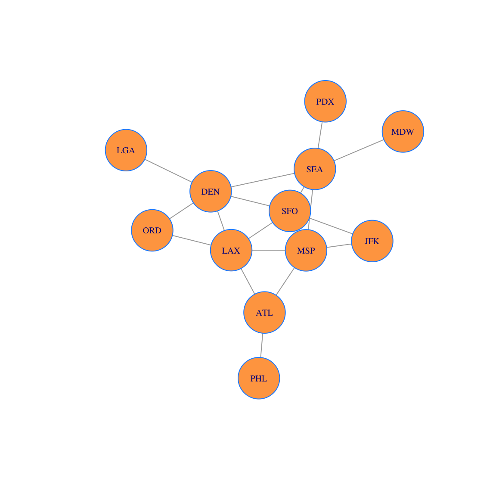
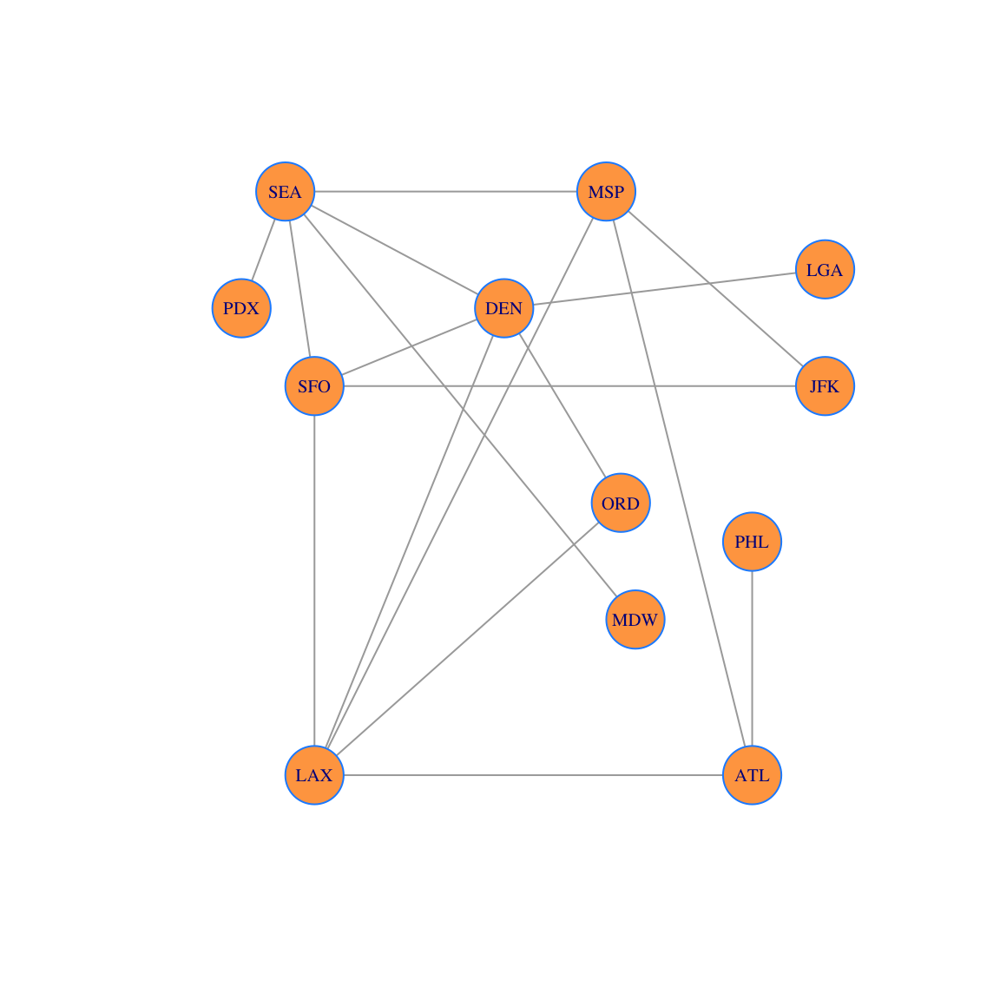

Vector 17 Airline Network
In this example, we will use a package called igraph. To install it, you need to go to the packages window (bottom right), choose install, and search for and install igraph from the packages window.
Once it is installed (you should only need to do that once, like you did for pracma), you then include it each time:
The igraph R package isn’t all that well documented. Here are some places to look for documentation if you want to learn about other features. Let me know if you find any other good references:
17.0.1 Graphs and Networks
Graphs consists of vertices and the edges between them. These edges are used to model connections in a wide array of applications, including but not limited to, physical, biological, social, and information networks. To emphasize the application to real-world systems, the term “Network Science” is sometimes used. In this application question, we will see that linear algebra is an important tool in the study of graphs.
17.0.1.1 Adjacency Matrices
Matrices are used to represent graphs and networks in a very direct way: we place a 1 in position i-j of the adjacency matrix A of the graph G, if there is an edge from node i to node j in G.
Here is the adjacency matrix we will use today. As you can see it is a 12 x 12 matrix.
A = rbind(
c(0,1,0,1,0,0,0,0,1,0,0,0),
c(1,0,1,1,1,0,1,0,0,0,0,0),
c(0,1,0,0,1,0,0,0,0,0,0,0),
c(1,1,0,0,0,1,0,1,0,0,0,0),
c(0,1,1,0,0,0,1,1,0,0,0,1),
c(0,0,0,1,0,0,1,0,0,0,0,0),
c(0,1,0,0,1,1,0,1,0,0,0,0),
c(0,0,0,1,1,0,1,0,0,1,1,0),
c(1,0,0,0,0,0,0,0,0,0,0,0),
c(0,0,0,0,0,0,0,1,0,0,0,0),
c(0,0,0,0,0,0,0,1,0,0,0,0),
c(0,0,0,0,1,0,0,0,0,0,0,0))
A## [,1] [,2] [,3] [,4] [,5] [,6] [,7] [,8] [,9] [,10] [,11] [,12]
## [1,] 0 1 0 1 0 0 0 0 1 0 0 0
## [2,] 1 0 1 1 1 0 1 0 0 0 0 0
## [3,] 0 1 0 0 1 0 0 0 0 0 0 0
## [4,] 1 1 0 0 0 1 0 1 0 0 0 0
## [5,] 0 1 1 0 0 0 1 1 0 0 0 1
## [6,] 0 0 0 1 0 0 1 0 0 0 0 0
## [7,] 0 1 0 0 1 1 0 1 0 0 0 0
## [8,] 0 0 0 1 1 0 1 0 0 1 1 0
## [9,] 1 0 0 0 0 0 0 0 0 0 0 0
## [10,] 0 0 0 0 0 0 0 1 0 0 0 0
## [11,] 0 0 0 0 0 0 0 1 0 0 0 0
## [12,] 0 0 0 0 1 0 0 0 0 0 0 0And here is the graph that corresponds to that adjacency matrix. Here is how to make the graph from your adjacency matrix

Observe that there is an edge from node \(i\) to node \(j\) if and only if there is a 1 in position \(i\)-\(j\) in the matrix.
You can add vertex labels and change the vertex size:

17.0.1.2 Graph Layouts
There are many graph layout algorithms which place the vertices in the plane. You can find many algorithms here: You can find others graph https://igraph.org/c/doc/igraph-Layout.html.
For example, here is a layout on a circle

The Fruchterman-Reingold algorithm is one of the most popular graph vertex layout algorithms. It is a force-directed layouts that tries to get a nice-looking graph where edges are similar in length and cross each other as little as possible. The algorithm simulates the graph as a physical system. Nodes are electrically charged particles that repulse each other when they get too close. The edges act as springs that attract connected nodes closer together. As a result, nodes are evenly distributed through the chart area, and the layout is intuitive in that nodes which share more connections are closer to each other.

Here we layout vertices by hand:
locations = rbind(
c(20,0),c(-10,0),c(11,7),c(10,15),c(3,12),c(25,10),
c(-10,10),c(-12,15),c(20,6),c(-15,12),c(12,4),c(25,13)
)
plot(g,vertex.size=30, layout=locations, vertex.label.cex=0.5)
17.0.2 Measures of Centrality
If we are considering placing an office in one of our airport locations, we may want to chose the most central hub for that office. One measure of centrality is to use the degree of the vertex, or the number of edges connected to that vertex. We calculate it this way: (1) First make a vector \(v\) of all 1s; then (2) multiply \(d = Av\) to get the degree proportions; and (3) we also divide \(d\) by its sum to re-scale the vector \(u\) so that we can think of those values as proportions.
v=rep(1,nrow(A)) # all 1s vector
d = A %*% v # degrees
u=d/sum(d) # proportion of degres
cbind(d,u) # show d and u together side-by-side in a matrix## [,1] [,2]
## [1,] 3 0.08823529
## [2,] 5 0.14705882
## [3,] 2 0.05882353
## [4,] 4 0.11764706
## [5,] 5 0.14705882
## [6,] 2 0.05882353
## [7,] 4 0.11764706
## [8,] 5 0.14705882
## [9,] 1 0.02941176
## [10,] 1 0.02941176
## [11,] 1 0.02941176
## [12,] 1 0.02941176Here we size each vertex according to the vector \(u.\) The larger vertices have more edges connected to them.

We can also sort the vertices by degree. To include the vertex names, we do it in a data frame.
df = data.frame(d) #We need to convert this vector to a data frame in order to add row names
rownames(df)=airports
ii=order(d,decreasing=TRUE)
df2 = data.frame(df[ii,])
rownames(df2) = airports[ii]
df2## df.ii...
## LAX 5
## DEN 5
## SEA 5
## MSP 4
## SFO 4
## ATL 3
## ORD 2
## JFK 2
## PHL 1
## PDX 1
## MDW 1
## LGA 117.0.3 Gould Index
The Gould Index is a measure of centrality that uses the dominant eigenvector. The first step is typically to add the identity matrix to the adjancency matrix \(A\), and get a new matrix \(B= A + I\). The \(n \times n\) identity matrix in R is obtained by using diag(n). Adding the identity gives a connection from a node to itself and allows the possibility of a layover at a given city.
## [,1] [,2] [,3] [,4] [,5] [,6] [,7] [,8] [,9] [,10] [,11] [,12]
## [1,] 1 1 0 1 0 0 0 0 1 0 0 0
## [2,] 1 1 1 1 1 0 1 0 0 0 0 0
## [3,] 0 1 1 0 1 0 0 0 0 0 0 0
## [4,] 1 1 0 1 0 1 0 1 0 0 0 0
## [5,] 0 1 1 0 1 0 1 1 0 0 0 1
## [6,] 0 0 0 1 0 1 1 0 0 0 0 0
## [7,] 0 1 0 0 1 1 1 1 0 0 0 0
## [8,] 0 0 0 1 1 0 1 1 0 1 1 0
## [9,] 1 0 0 0 0 0 0 0 1 0 0 0
## [10,] 0 0 0 0 0 0 0 1 0 1 0 0
## [11,] 0 0 0 0 0 0 0 1 0 0 1 0
## [12,] 0 0 0 0 1 0 0 0 0 0 0 1We now start with the all 1s vector and iterate a few steps.
## v0
## [1,] 1 4 17 76
## [2,] 1 6 29 139
## [3,] 1 3 15 72
## [4,] 1 5 24 109
## [5,] 1 6 28 132
## [6,] 1 3 13 63
## [7,] 1 5 26 122
## [8,] 1 6 26 120
## [9,] 1 2 6 23
## [10,] 1 2 8 34
## [11,] 1 2 8 34
## [12,] 1 2 8 36In your group you should agree about what these vectors are counting. We can do this using a loop:
N = 10
X = matrix(0,nrow=nrow(B),ncol=N+1)
X[,1] = rep(1,nrow(B))
for (i in 2:(N+1)) {
X[,i] = A %*% X[,i-1]
}
X ## [,1] [,2] [,3] [,4] [,5] [,6] [,7] [,8] [,9] [,10] [,11]
## [1,] 1 3 10 36 130 477 1741 6392 23394 85846 314471
## [2,] 1 5 18 69 245 923 3317 12346 44761 165467 602927
## [3,] 1 2 10 35 134 483 1796 6534 24091 88004 323475
## [4,] 1 4 15 51 196 688 2598 9307 34693 125610 464760
## [5,] 1 5 17 65 238 873 3217 11745 43243 158008 580881
## [6,] 1 2 8 32 109 421 1484 5592 20090 74739 271069
## [7,] 1 4 17 58 225 796 2994 10783 40046 145459 536922
## [8,] 1 5 15 59 204 777 2765 10363 37365 138708 503807
## [9,] 1 1 3 10 36 130 477 1741 6392 23394 85846
## [10,] 1 1 5 15 59 204 777 2765 10363 37365 138708
## [11,] 1 1 5 15 59 204 777 2765 10363 37365 138708
## [12,] 1 1 5 17 65 238 873 3217 11745 43243 158008These numbers get big fast, so we divide by the sum each time.
N = 10
X = matrix(0,nrow=nrow(B),ncol=N+1)
X[,1] = rep(1,nrow(B))
for (i in 2:(N+1)) {
X[,i] = A %*% X[,i-1]
X[,i] = X[,i]/sum(X[,i])
}
X ## [,1] [,2] [,3] [,4] [,5] [,6] [,7] [,8] [,9] [,10]
## [1,] 1 0.08823529 0.0781250 0.07792208 0.07647059 0.07676215 0.07630610 0.07650509 0.07631481 0.07642930
## [2,] 1 0.14705882 0.1406250 0.14935065 0.14411765 0.14853556 0.14538043 0.14776780 0.14601724 0.14731644
## [3,] 1 0.05882353 0.0781250 0.07575758 0.07882353 0.07772771 0.07871669 0.07820467 0.07858853 0.07835058
## [4,] 1 0.11764706 0.1171875 0.11038961 0.11529412 0.11071773 0.11386746 0.11139437 0.11317388 0.11183147
## [5,] 1 0.14705882 0.1328125 0.14069264 0.14000000 0.14048922 0.14099755 0.14057451 0.14106529 0.14067564
## [6,] 1 0.05882353 0.0625000 0.06926407 0.06411765 0.06775024 0.06504208 0.06692998 0.06553666 0.06654066
## [7,] 1 0.11764706 0.1328125 0.12554113 0.13235294 0.12809784 0.13122370 0.12906044 0.13063619 0.12950317
## [8,] 1 0.14705882 0.1171875 0.12770563 0.12000000 0.12504023 0.12118689 0.12403351 0.12189035 0.12349271
## [9,] 1 0.02941176 0.0234375 0.02164502 0.02117647 0.02092050 0.02090638 0.02083782 0.02085168 0.02082784
## [10,] 1 0.02941176 0.0390625 0.03246753 0.03470588 0.03282910 0.03405505 0.03309396 0.03380569 0.03326632
## [11,] 1 0.02941176 0.0390625 0.03246753 0.03470588 0.03282910 0.03405505 0.03309396 0.03380569 0.03326632
## [12,] 1 0.02941176 0.0390625 0.03679654 0.03823529 0.03830061 0.03826262 0.03850389 0.03831399 0.03849955
## [,11]
## [1,] 0.07633566
## [2,] 0.14635635
## [3,] 0.07852132
## [4,] 0.11281727
## [5,] 0.14100484
## [6,] 0.06580012
## [7,] 0.13033410
## [8,] 0.12229566
## [9,] 0.02083852
## [10,] 0.03367041
## [11,] 0.03367041
## [12,] 0.03835535You can see that these vectors are converging to a common direction: the direction of the dominant eigenvector. We can also just get this final direction without saving all of the values along the way. Here we iterate 1000 steps and save the final value. This limiting vector is the Gould Index.
## [,1]
## [1,] 0.07637062
## [2,] 0.14676474
## [3,] 0.07845446
## [4,] 0.11239329
## [5,] 0.14086410
## [6,] 0.06611172
## [7,] 0.12998472
## [8,] 0.12280792
## [9,] 0.02083107
## [10,] 0.03349744
## [11,] 0.03349744
## [12,] 0.03842249We can see that it is the same as the dominant eigenvector as follows. First compute the eigenvectors.
## eigen() decomposition
## $values
## [1] 4.66618847 2.64207538 2.41909839 1.80037113 1.27260439 1.00000000 1.00000000 0.49835918 0.02718633
## [10] -0.67732874 -0.92557189 -1.72298263
##
## $vectors
## [,1] [,2] [,3] [,4] [,5] [,6] [,7] [,8]
## [1,] -0.23401334 0.57249329 -0.03677166 0.289569576 -0.11347970 0.000000e+00 0.000000e+00 0.17344569
## [2,] -0.44971357 0.23508235 0.28327135 -0.009053428 0.29280642 2.626816e-16 1.203957e-16 0.27532162
## [3,] -0.24039858 -0.04730698 0.44304618 0.102332378 0.42192015 -1.576610e-16 -4.434216e-17 -0.59911594
## [4,] -0.34439328 0.35635470 -0.30954196 -0.120977575 0.09253829 4.851644e-01 1.208947e-01 -0.01657232
## [5,] -0.43163295 -0.31276398 0.34545477 0.090957309 -0.17778914 1.198948e-16 1.395385e-16 0.02521939
## [6,] -0.20257820 0.10572025 -0.24645181 -0.612347635 -0.18646435 -5.005332e-18 -9.291441e-17 -0.52296040
## [7,] -0.39829657 -0.18275409 -0.04019741 -0.369127791 -0.14336929 -4.851644e-01 -1.208947e-01 0.27891061
## [8,] -0.37630557 -0.32813461 -0.43931838 0.235004528 0.03236396 -1.021498e-16 -3.393381e-17 0.08250644
## [9,] -0.06383014 0.34864008 -0.02591199 0.361794131 -0.41627977 -4.851644e-01 -1.208947e-01 -0.34575674
## [10,] -0.10264218 -0.19982920 -0.30957570 0.293619448 0.11872135 -1.709709e-01 6.861261e-01 -0.16447314
## [11,] -0.10264218 -0.19982920 -0.30957570 0.293619448 0.11872135 1.709709e-01 -6.861261e-01 -0.16447314
## [12,] -0.11773343 -0.19046871 0.24343257 0.113643916 -0.65218735 4.851644e-01 1.208947e-01 -0.05027381
## [,9] [,10] [,11] [,12]
## [1,] 0.19570619 6.653425e-01 0.08742351 0.026476499
## [2,] 0.33415547 -4.571765e-01 -0.14917762 0.397124122
## [3,] -0.08232149 1.379670e-01 0.40635541 -0.072909426
## [4,] -0.32336571 -2.621537e-01 0.02623868 -0.459495824
## [5,] -0.25407199 2.257605e-01 -0.63328894 -0.198593023
## [6,] 0.18953651 1.563407e-01 -0.22162883 0.307139725
## [7,] 0.13898200 -8.104161e-05 0.40052356 -0.376840313
## [8,] -0.40482358 7.521122e-02 0.23285847 0.520458800
## [9,] -0.20117541 -3.966679e-01 -0.04540132 -0.009723345
## [10,] 0.41613681 -4.483988e-02 -0.12092951 -0.191135557
## [11,] 0.41613681 -4.483988e-02 -0.12092951 -0.191135557
## [12,] 0.26117231 -1.345953e-01 0.32888356 0.072932167Here we extract the dominant eigenvector \(v_1\), rescale it to sum to 1, and display it next to the vector \(w\) we got above by iteration. This common vector, scaled to sum to one, is called Gould’s Index.
## v1
## [1,] 0.07637062 0.07637062
## [2,] 0.14676474 0.14676474
## [3,] 0.07845446 0.07845446
## [4,] 0.11239329 0.11239329
## [5,] 0.14086410 0.14086410
## [6,] 0.06611172 0.06611172
## [7,] 0.12998472 0.12998472
## [8,] 0.12280792 0.12280792
## [9,] 0.02083107 0.02083107
## [10,] 0.03349744 0.03349744
## [11,] 0.03349744 0.03349744
## [12,] 0.03842249 0.03842249We can now plot the network with the vertices sized by the Gould Index.

And we can order the vertices using the Gould Index
df = data.frame(v1) #We need to convert this vector to a data frame in order to add row names
rownames(df)=airports
ii=order(v1,decreasing=TRUE)
df2 = data.frame(df[ii,])
rownames(df2) = airports[ii]
df2## df.ii...
## LAX 0.14676474
## DEN 0.14086410
## SFO 0.12998472
## SEA 0.12280792
## MSP 0.11239329
## ORD 0.07845446
## ATL 0.07637062
## JFK 0.06611172
## LGA 0.03842249
## PDX 0.03349744
## MDW 0.03349744
## PHL 0.02083107